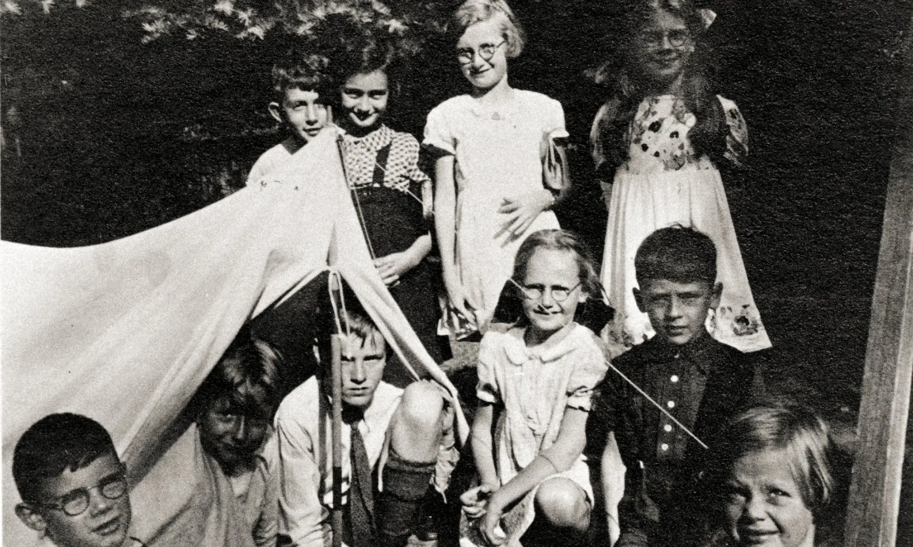
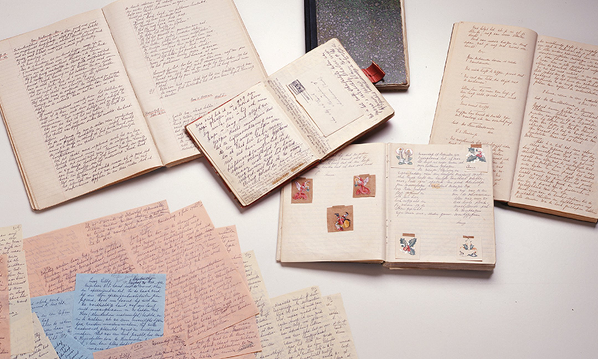

" พลังของคำจากเหยื่อสงคราม
และการเหยียดเชื้อชาติ "
ใครคือเด็กหญิงที่ทำให้โลกทั้งใบหันมาฟังเสียงของ “ความหวัง” ?
แอนน์ แฟรงก์ คือหนึ่งในนั้น — เด็กสาววัยสิบสามที่บันทึกเรื่องราวชีวิตในช่วงสงครามโลกครั้งที่สอง
มารู้จักเธอให้มากขึ้น แล้วคุณจะเข้าใจว่า “พลังของคำ” สามารถทำให้เรื่องราวเล็ก ๆ กลายเป็นตำนานได้
- เป็นพยานทางประวัติศาสตร์
หนังสือบันทึกเรื่องราวชีวิตจริงของแอนน์ แฟรงก์และครอบครัวที่ต้องเผชิญกับความโหดร้ายของสงครามและการเหยียดเชื้อชาติ ช่วยให้คนรุ่นหลังเข้าใจเหตุการณ์และผลกระทบของสงครามโลกครั้งที่ 2 อย่างลึกซึ้ง
- สะท้อนเสียงของเหยื่อสงคราม
บันทึกของแอนน์เป็นตัวแทนของเด็กและผู้บริสุทธิ์ที่ตกเป็นเหยื่อของการกดขี่และความรุนแรง ช่วยให้ผู้คนตระหนักถึงความเจ็บปวดและความหวังของผู้ที่ถูกกดขี่
- ส่งเสริมค่านิยมมนุษยธรรมและเสรีภาพ
หนังสือแสดงถึงความหวัง ความกล้าหาญ และศรัทธาในความดีของมนุษย์ แม้ในสถานการณ์เลวร้าย ช่วยกระตุ้นให้คนรักษาความเป็นมนุษย์และยืนหยัดต่อสู้เพื่อสิทธิเสรีภาพ
การอ่านหนังสือ “บันทึกของแอนน์ แฟรงก์” หรือ “The Diary of Anne Frank” ไม่เพียงแต่เป็นการอ่านเรื่องราวในอดีต แต่ยังเป็นประสบการณ์ทางจิตใจและความคิดที่ลึกซึ้ง สิ่งที่ได้รับจากการอ่านหนังสือ บันทึกของแอนน์ แฟรงก์
1.ความเข้าใจในคุณค่าของชีวิต
แอนน์เขียนถึงความฝัน ความกลัว และความหวังในช่วงเวลาที่ยากลำบากที่สุดทำให้ผู้อ่านตระหนักว่า "แม้แต่ชีวิตประจำวันธรรมดา ก็เป็นสิ่งมีค่า หากเรายังมีอิสระ มีความปลอดภัย และมีโอกาสเลือก"
2.เห็นภาพความโหดร้ายของสงครามจากมุมมองของเด็ก
หนังสือไม่ได้เล่าจากมุมทหารหรือผู้นำ แต่จาก “เด็กผู้หญิงคนหนึ่ง” ทำให้ผู้อ่านเข้าใจผลกระทบของสงครามต่อจิตใจของผู้บริสุทธิ์ โดยเฉพาะ “เด็กและครอบครัว”
3.ความเห็นอกเห็นใจ (Empathy) ต่อเพื่อนมนุษย์
เมื่อได้อ่านความคิด ความรู้สึก และความหวังของแอนน์ที่เป็นมนุษย์เหมือนเราทำให้เราเรียนรู้ที่จะเข้าใจผู้อื่นมากขึ้น เห็นใจผู้ที่เผชิญความอยุติธรรม ความรุนแรง และการถูกเลือกปฏิบัติ
4.แรงบันดาลใจในการไม่ยอมแพ้
แม้ในช่วงที่แอนน์ต้องซ่อนตัวอย่างหวาดกลัว เธอยังเขียนหนังสือ อ่านหนังสือ และเชื่อว่ามนุษย์ยังมีความดี
คำพูดของเธอว่า
> “แม้แต่ตอนนี้ ฉันก็ยังเชื่อว่าผู้คนลึก ๆ แล้วยังมีจิตใจดีงาม”
> สร้างแรงบันดาลใจให้ผู้อ่านมีความหวัง แม้อยู่ในช่วงเวลายากลำบาก
5.ตระหนักถึงคุณค่าของสิทธิเสรีภาพ
การอ่านหนังสือเล่มนี้ทำให้เห็นว่า การมี “เสรีภาพในการใช้ชีวิต” เป็นสิ่งสำคัญที่ไม่ควรมองข้ามมันเตือนให้เรารักษาสิทธิ เสรีภาพ และสันติภาพที่เรามีในปัจจุบันไว้ให้ดี
6.เรียนรู้การใช้ภาษาที่เรียบง่ายแต่ทรงพลัง
แอนน์ใช้ภาษาธรรมดา แต่ถ่ายทอดอารมณ์และความคิดได้ลึกซึ้งทำให้ผู้อ่านได้ฝึกการอ่านแบบ “เข้าใจความรู้สึก”และอาจได้แรงบันดาลใจในการเขียนของตนเอง
> หนังสือเล่มนี้ไม่ใช่แค่ "บันทึกประจำวันของเด็กหญิง" แต่เป็น “กระจกสะท้อนจิตใจมนุษย์” ท่ามกลางเงามืดของสงคราม และเป็นบทเรียนอันล้ำค่าที่โลกไม่ควรลืม
แอนน์ แฟรงก์ (Anne Frank)เป็นหนึ่งในบุคคลสำคัญทางประวัติศาสตร์ที่เป็นสัญลักษณ์ของความโหดร้ายในช่วงสงครามโลกครั้งที่สอง และเป็นตัวแทนเสียงของเยาวชนผู้บริสุทธิ์ที่ต้องทนทุกข์จากการฆ่าล้างเผ่าพันธุ์ชาวยิวโดยพรรคนาซี เยอรมนี เรื่องราวของเธอถูกจารึกไว้ในประวัติศาสตร์ ผ่านบันทึกส่วนตัวที่ต่อมาได้รับการตีพิมพ์ในชื่อว่า "บันทึกลับของแอนน์ แฟรงก์" (The Diary of Anne Frank) แอนน์ แฟรงก์ มีชื่อเต็มว่า อันเนลีเซ มารี แฟรงก์ (Annelies Marie Frank) เกิดเมื่อวันที่ 12 มิถุนายน ค.ศ. 1929 ที่เมืองแฟรงก์เฟิร์ต ประเทศเยอรมนี ในครอบครัวชาวยิว เมื่อพรรคนาซีเริ่มมีอำนาจในเยอรมนีและเริ่มกดขี่ชาวยิว ครอบครัวของเธอจึงย้ายไปยังกรุงอัมสเตอร์ดัม ประเทศเนเธอร์แลนด์ เพื่อแสวงหาความปลอดภัย ต่อมาในปี ค.ศ. 1942 เมื่อแอนน์มีอายุได้ 13 ปี นาซีเริ่มกวาดล้างชาวยิวในเนเธอร์แลนด์ ครอบครัวแฟรงก์จึงต้องหลบซ่อนอยู่ในห้องลับชั้นบนของอาคารสำนักงานของบิดาเป็นเวลานานกว่า 2 ปี ระหว่างการหลบซ่อนนั้น แอนน์ได้เขียนบันทึกประจำวันอย่างสม่ำเสมอ โดยถ่ายทอดความรู้สึก ความกลัว ความฝัน ความหวัง และชีวิตความเป็นอยู่ภายใต้เงามืดของสงครามอย่างละเอียด ซื่อสัตย์ และลึกซึ้งเกินวัย น่าเศร้าที่ในวันที่ 4 สิงหาคม ค.ศ. 1944 แอนน์และครอบครัวถูกจับกุมหลังจากมีผู้แจ้งเบาะแสให้ทหารนาซีทราบ พวกเขาถูกส่งตัวไปยังค่ายกักกันหลายแห่ง และสุดท้ายแอนน์เสียชีวิตในค่ายกักกันแบร์เกิน-เบลเซิน ประเทศเยอรมนี ด้วยโรคไข้รากสาดใหญ่ในช่วงต้นปี ค.ศ. 1945 ขณะมีอายุเพียง 15 ปี เพียงไม่กี่สัปดาห์ก่อนสงครามจะสิ้นสุดลง หลังสงครามสิ้นสุด บิดาของเธอคือ ออตโต แฟรงก์ ซึ่งเป็นสมาชิกคนเดียวในครอบครัวที่รอดชีวิต ได้ค้นพบบันทึกของเธอและนำมาจัดพิมพ์เป็นหนังสือ จนกลายเป็นหนึ่งในวรรณกรรมที่สำคัญที่สุดของโลก เนื้อหาในบันทึกของแอนน์ช่วยให้ผู้คนทั่วโลกเข้าใจถึงความโหดร้ายของสงครามและการเหยียดเชื้อชาติ อีกทั้งยังแสดงให้เห็นถึงจิตใจที่เข้มแข็งของเด็กหญิงคนหนึ่งที่แม้ต้องเผชิญความโหดร้ายก็ยังไม่สิ้นศรัทธาในความดีของมนุษย์ คำพูดที่เป็นอมตะของแอนน์ แฟรงก์ ที่ว่า "แม้แต่ตอนนี้ ฉันก็ยังเชื่อว่าผู้คนลึก ๆ แล้วยังมีจิตใจดีงาม" ยังคงสะท้อนก้องอยู่ในใจผู้คนมาจนถึงทุกวันนี้ แอนน์ แฟรงก์ จึงมิใช่เพียงแค่เหยื่อของสงคราม หากแต่เป็นเสียงอันบริสุทธิ์ที่บอกเล่าความจริงของมนุษยชาติผ่านมุมมองของเด็กหญิงตัวเล็ก ๆ คนหนึ่งอย่างงดงามและทรงพลัง
บ้านที่แอนน์ แฟรงก์ และครอบครัวใช้หลบซ่อนตัวในช่วงสงครามโลกครั้งที่ 2 ตั้งอยู่ที่ Prinsengracht 263 ในกรุงอัมสเตอร์ดัม ประเทศเนเธอร์แลนด์ ปัจจุบันสถานที่นี้ถูกเปลี่ยนเป็น พิพิธภัณฑ์แอนน์ แฟรงก์ (Anne Frank House) ซึ่งเปิดให้ประชาชนเข้าชมเพื่อเรียนรู้เกี่ยวกับชีวิตและการต่อสู้ของแอนน์ แฟรงก์
🏠 ประวัติของบ้านที่ซ่อนตัว
บ้านหลังนี้เป็นที่ตั้งของบริษัทของพ่อของแอนน์ แฟรงก์ ซึ่งให้การสนับสนุนและช่วยเหลือครอบครัวของแอนน์และอีก 7 คนให้หลบซ่อนจากการตามล่าของนาซี พวกเขาอาศัยอยู่ในพื้นที่ที่ซ่อนอยู่ด้านหลังของอาคาร ซึ่งรวมถึงชั้น 2 ชั้น 3 และห้องใต้หลังคา
🖼️ พิพิธภัณฑ์แอนน์ แฟรงก์
พิพิธภัณฑ์นี้มีการจัดแสดงที่สะท้อนถึงชีวิตของแอนน์ แฟรงก์ในช่วงที่เธอหลบซ่อนตัว รวมถึงการจัดแสดงบันทึกของเธอที่กลายเป็นสัญลักษณ์ของการต่อสู้เพื่อเสรีภาพและมนุษยธรรม ผู้เข้าชมสามารถเรียนรู้เกี่ยวกับประวัติศาสตร์ของสงครามโลกครั้งที่ 2 และผลกระทบที่มีต่อชุมชนยิว
📍การเยี่ยมชมพิพิธภัณฑ์
ผู้ที่สนใจสามารถเยี่ยมชมพิพิธภัณฑ์แอนน์ แฟรงก์ได้ที่:Prinsengracht 263, 1016 GV Amsterdam, Netherlands
📅 เปิดให้เข้าชมทุกวัน
🎟️ แนะนำให้จองตั๋วล่วงหน้าออนไลน์ผ่านเว็บไซต์ทางการของพิพิธภัณฑ์เพื่อหลีกเลี่ยงการรอคิวนาน
การเยี่ยมชมพิพิธภัณฑ์แอนน์ แฟรงก์ไม่เพียงแต่เป็นการเรียนรู้เกี่ยวกับประวัติศาสตร์ แต่ยังเป็นการระลึกถึงความกล้าหาญและความหวังของแอนน์ แฟรงก์ที่ยังคงมีอิทธิพลต่อโลกจนถึงทุกวันนี้
ปัจจุบันพิพิธภัณฑ์แอนน์แฟรงก์มีเว็บไซต์สำหรับผู้ที่สนใจศึกษาประวัติของแอนน์แฟรงก์ และจองตั๋วสำหรับเข้าชมพิพิธภัณฑ์ล่วงหน้า อีกทั้งยังสามารถเยี่ยมภายในพิพิธภัณฑ์ที่ครั้งหนึ่งเคยเป็นบ้านที่ครอบครัวแอนน์แฟรงก์เคยซ่อนตัวแบบออนไลน์ ในรูปแบบภาพ 360 องศาได้อีกด้วย คลิกที่นี่เพื่อเปิดลิงก์